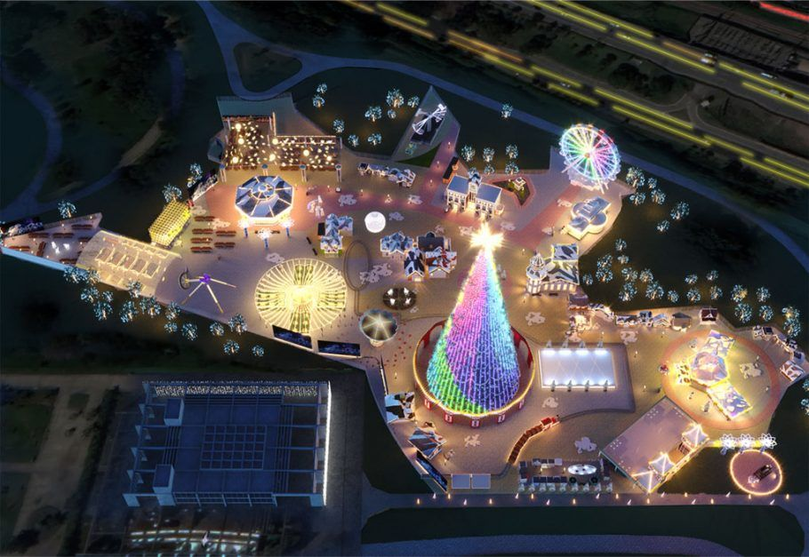
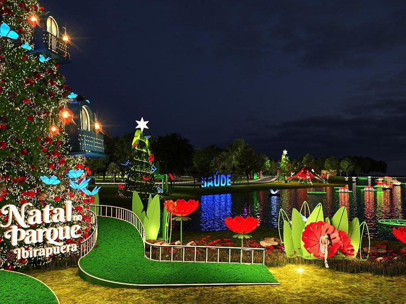
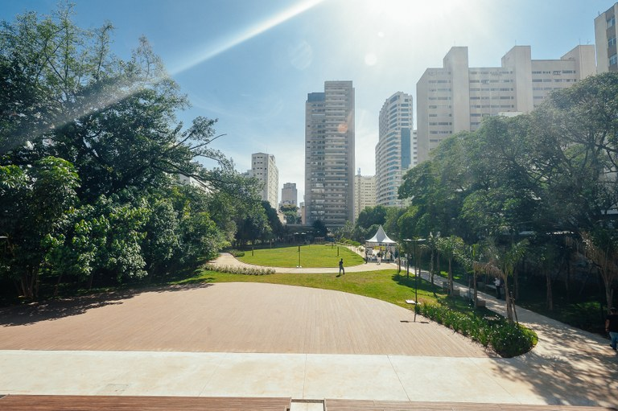

Com 22 mil m², Villa Natal tem decoração caprichada, árvore gigante, pista de patinação, feirinha e muitas outras atrações fantásticas.
A contagem regressiva para o Natal já começou! E, depois de um ano sem comemorar o feriado mais amado do mundo, SP ganha...Ler mais
Parque Ibirapuera apresentará espetáculos natalinos todos os dias a partir de 4 de dezembro. Com o tema “Natal no Parque Ibirapuera: a festa da natureza”, o evento trará para os visitantes uma história mágica e emocionante, com o objetivo de conscientizar o público sobre a importância da preservação ambiental.
Entre as atrações estão a projeção holográfica na fonte do lago com efeitos mágicos que simulam animais e objetos que poderão ser visualizados em qualquer ponto da grande margem de 1,5 km dentro do parque.Ler mais
Área de 23 mil m² passou a ser do poder público municipal em 2019. Totalmente acessível, conta com espécies arbóreas nativas e exóticas.
A Prefeitura de São Paulo, por meio da Secretaria Municipal do Verde e do Meio Ambiente, inaugurou na manhã do sábado dia 06/11 o Parque Municipal Augusta “Prefeito Bruno Covas”.Ler mais.